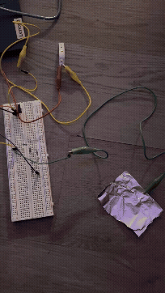
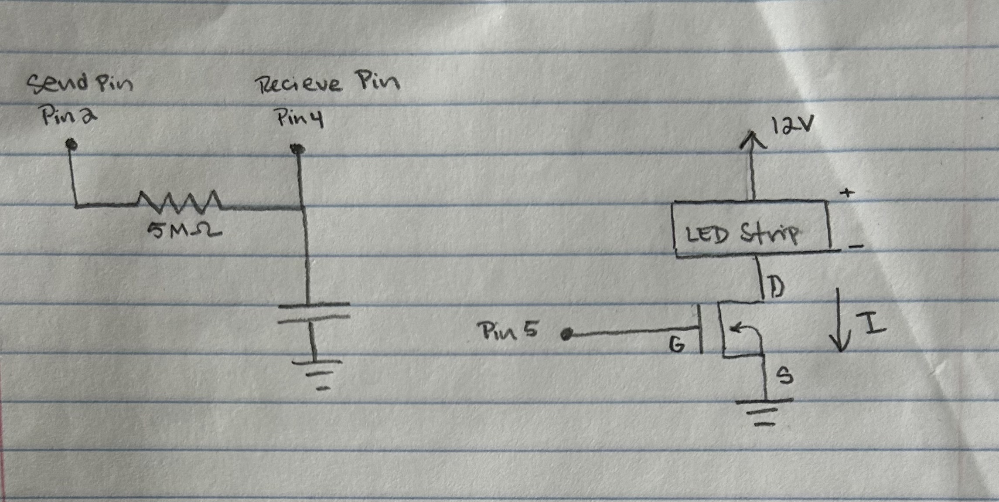
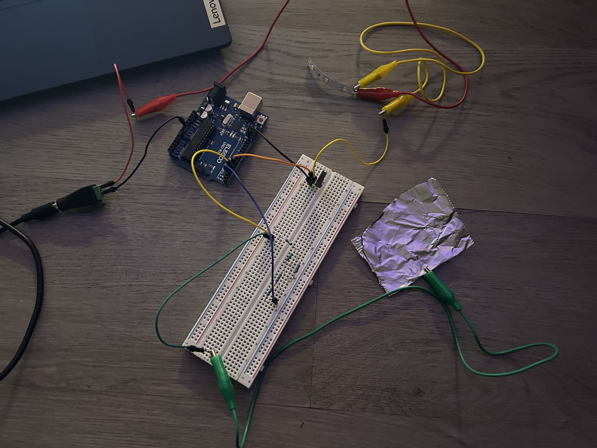
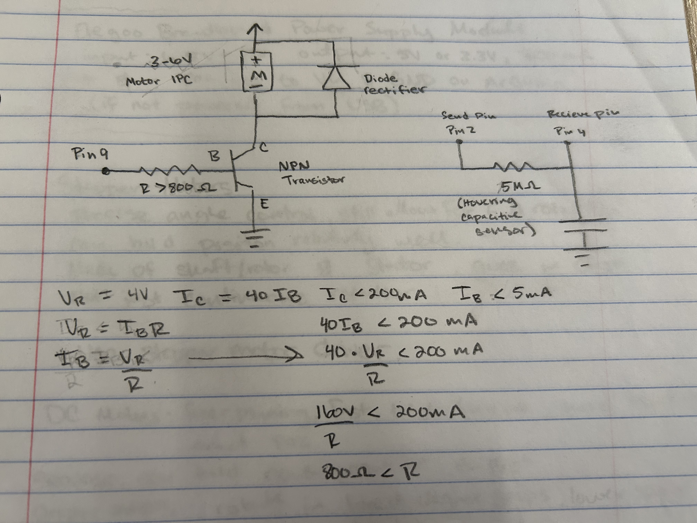
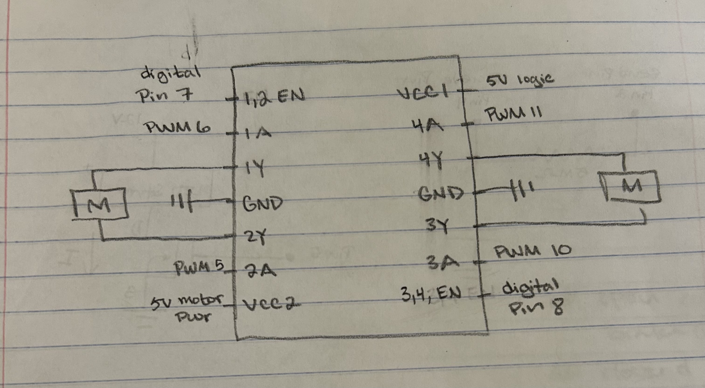

Here is all the documentation for assignment 5!

Pictured above is the schematic of the the A5 circuits. I used the schematic to plan out how to build the circut and determine what resiter I needed to use for the capacitive sensor. The capacitive sensor has a recive pin at Pin 4, a send pin at Pin 2, and utilizes a 5M ohm resistor. The 5M ohm resistor was chosen because I wanted the capacitive sensor to sense how close my hand was. This meant I needed to use a capacitor greater tan 1M ohm, which only responds to absolute touch. I played around with different resistor amounts during class when learning about capacitors, and determined that I would use 5M ohms for this assignmet since it responded to a hand hovering. The LED strip has a 12V power supply and utalizes a MOSFET transitor, with its gate connecting to pin 5.

Pictured above is the circuts I built based off of the schematic I drew. I used 5 1M ohm resistors to have a total resistance of 5M ohms, as according to my schematic.
/*
A5 High(er) voltage and transistors!
Fades an LED strip based on how far away a hand is hovering from the capacitive sensor.
The closer the hand hovers, the brighter the strip becomes. During calibration,
the user must hover their hand over the capacitive sensor at various heights
Code for calibrating the system is from "Calibration" Ardiuno built in examples,
which is Public Domain. The capacitor code was made based on 11/3/26 in
class examples. The smoothing code was generated using Claude, as documented in
my A4 assignment.
*/
// Capacitive Sensor library
#include
// variable to store the brightness
int brightness = 0;
// the pin the ledStrip is connected to
int ledStrip = 5;
// Set up the Capacitive sensor with a send and recieve pin
// first param is send, second is receive
CapacitiveSensor cs_s2_r4 = CapacitiveSensor(2,4);
// minimum sensor value
long minVal = 100000;
// maximum sensor value
long maxVal = 0;
// smoothing variable to hold decimals
float smoothed = 0;
// the setup routine
void setup() {
//set up the ledStrip pin as an output
pinMode(ledStrip, OUTPUT);
// record when callibrating begins
unsigned long start = millis();
// calibrate during the first five seconds
while (millis() - start < 5000) {
// read the capacitor:
long csValue = cs_s2_r4.capacitiveSensor(30);
if (csValue < 0) continue;
// record the maximum sensor value
if (csValue > maxVal) {
// sets the maxVal if there is a new max
maxVal = csValue;
}
// record the minimum sensor value
if (csValue < minVal) {
// sets the minVal is there is a new min
minVal = csValue;
}
}
// set smoothed value to where the untouched sensor reads
smoothed = minVal;
}
// the loop routine runs over and over again forever:
void loop() {
// Call the function to get the capacitive sensor value with 30 samples
long csReading = cs_s2_r4.capacitiveSensor(30);
// in case the sensor value is outside the range seen during calibration
csReading = constrain (csReading, minVal, maxVal);
//smooth the data
smoothed = 0.9 * smoothed + 0.1 * csReading;
// apply the calibration to the sensor reading
brightness = map ((long)smoothed, minVal, maxVal, 0, 255);
// fade the ledStrip to variable 'brightness'
analogWrite(ledStrip, brightness);
}
These are the datasheets for the n-mosfet transistor: DMT6009LCT, IRLZ44N, P30N06LE. Read the text on your mosfet to see which one you have. For your mosfet, what is the absolute maximum amount of current between pins 2 and 3?
I have the IRLZ44N n-mosfet transistor. At 25 degrees celcius, the the absolute maximum continuous drain current between pins 2 and 3 at 10 volts is 47A. At 100 degrees celcius, the absolute maximum continuous drain current between pins 2 and 3 at 10 volts is 33A.
Draw a schematic for a circuit with using at least your arduino, a DC motor, a flyback diode, and capacitors between power and ground. Find parts with datasheets you could use for each of these schematic components.

Here is the datasheet for the L293D chip: https://www.ti.com/product/L293D. Draw a schematic using at least your arduino, this chip, and two motors. Write (pseudo) code that shows how you would move the motors both forward, both back, then one forward one back, and one back then forward.

// move both motors forward (assuming forward is right)
digitalWrite(1A, LOW)
digitalWrite(2A, HIGH)
digitalWrite(3A, LOW)
digitalWrite(4A, HIGH)
// move both motors backwards (assuming backwards is left)
digitalWrite(1A, HIGH)
digitalWrite(2A, LOW)
digitalWrite(3A, HIGH)
digitalWrite(4A, LOW)
//first motor forward, second backwards
digitalWrite(1A, LOW)
digitalWrite(2A, HIGH)
digitalWrite(3A, HIGH)
digitalWrite(4A, LOW)
//one back then forward
//first motor moving back, then delays 5 second before moving forward
digitalWrite(1A, HIGH)
digitalWrite(2A, LOW)
delay(5000)
digitalWrite(1A, LOW)
digitalWrite(2A, HIGH)